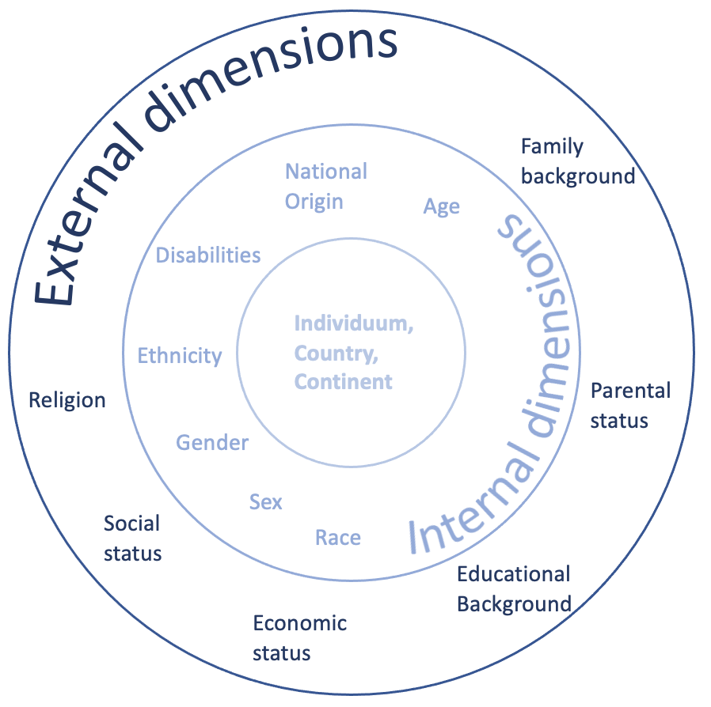

Diversität im Geographieunterricht
Sitzung 11 & 12
Als Lehrkräfte sollten wir stets sensibel mit Inhalten umgehen und kritisch hinterfragen. Zur Vorerbeitung dazu beschäftigen wir uns zunächst mit dem Thema Diversität und Stereotypen.
Diversität & Stereotype
Diversität kann als mehrdimensional definiert werden und berücksichtigt unterschiedlichste Merkmale von Individuen und Gesellschaften (s. Abb. 1). Das Fach Geographie hat ein großes Potenzial, diversitätssensibel zu unterrichten, da Diversität komplexe Interaktionen in Räumen auf verschiedenen Skalen anspricht. In Zeiten von Globalisierung und Migrationsprozessen werden die Schülerinnen und Schüler immer diverser. Die vielfältige Lebenswirklichkeit der Schülerinnen und Schüler muss sich in der Bildung angemessen widerspiegeln. So fordern sowohl die Bildungsstandards als auch Curricula eine adäquate Darstellung von Vielfalt, z.B. durch den Abbau von Stereotypen, die mit unterschiedlichen Kulturen verbunden sind. Aus diesem Grund ist es notwendig, Kompetenzen wie kritisches reflektieren und denken zu fördern und eine hohe Sensibilität gegenüber Diversität und Stereotpyisierungen zu erlangen. Die größte Schwierigkeit liegt dabei in der Bewusstmachung von Stereotypisierungen. Im Fach Geographie sind wir aufgrund verschiedener Fachgegenstände häufig mit Stereotypen konfrontiert, die nicht zuletzt auch durch das Schulbuch reproduziert werden und betont erneut die Wichtigkeit des kritischen Reflektierens.

Photo: Diversity dimensions’ Aus: Dörfel et al. 2023
Aufgabe: Welche Anforderungen gibt es im Kerncurriculum Hessen Geographie (Sek 1/ Sek2) zum Thema Diversität, Stereotypen und Vorurteilen? Exzerpieren Sie Beispiele. Sie haben dafür 15 Minuten Zeit. {:.notice–success}
Lehrmaterialien
Schulbücher sind nach wie vor das primäre Unterrichtsmedium an Deutschen Schulen. Da sie in Hessen einem Lizensierungsverfahren unterliegen, müssen Sie die Anforderungen des KC´s angemessen abbilden. Wie können Schulbüchern bzw. andere Lehrmaterialien unter diesen Gesichtspunkten angemessen konzipiert sein?
Aufgabe: Sind die aktuellen Geographie-Schulbücher in Hessen angemessen konzipiert? Bilden Sie Kleingruppen und betrachten Sie die Ihnen ausgeteilten Schulbücher unterschiedlicher Jahrgangsstufen. Werden Stereotypen reproduziert? Welche Botschaften werden dadurch vermittelt? Warum ist das kritisch? Welche Alternativen gäbe es? Gibt es Beispiele einer diversitätssensiblen Abbildung? Sie haben 25 Minuten Zeit, die Aufgaben zu bearbeiten. Halten Sie Ihre Ergebnisse schriftlich fest. {:.notice–success}
Bis zum nächsten Mal..
- Prüfen Sie Ihre eigene Skizze (Sachanalyse) vor dem Hintergrund der thematisierten Aspekte zum Thema: Diversität & Stereotypen. Stellen Sie die fachlichen Inhalte dahingehend angemessen dar?
- Lesen Sie den Basistext von Usher (2023) (min. bis S. 31) und bearbeiten Sie die Ihnen zugeteilte Leitfrage in Vorbereitung auf die nächste Sitzung:
- Was ist die Bedeutung des Geographieunterrichts für den Diskurs Critical Multicultural Education (CMCE)?
- Wie kann CMCE zur Beseitigung von Stereotypen im Geographieunterricht beitragen?
- Welche Herausforderungen gehen mit CMCE im Unterricht einher?
Laden Sie ihre Abgaben im dafür vorgesehenen Ordner auf Ilias bis spätestens Montag 20 Uhr im dafür vorgesehenen Ilias-Ordner hoch. Hinweis: Alle die nicht da waren, wählen eine der Leitfragen aus.
Kritisch-multikulturelle Bildung: Konzepte und Grundprinzipien
Im Geographieunterricht blicken wir in die Welt. Doch welche kulturelle Brille tragen wir dabei? Die Critical Multicultural Education befasst sich mit diversitätssensiblem Unterricht, der keine Vorurteile aufbaut. Der Geographie-Unterricht birgt das Potenzial, nicht nur geografisches Wissen zu vermitteln, sondern auch einen Raum zu schaffen, der Diversität betont und stereotype Annahmen hinterfragt. Diese Einführung soll verdeutlichen, warum und wie kritisch-multikulturelle Perspektiven im Geographie-Unterricht integriert werden können.
Im Zentrum stehen Critical Multicultural Education und Culturally Responsive Pedagogy. Ersteres geht über traditionelle Multikulturverständnisse hinaus, indem es aktiv gegen Vorurteile vorgeht. Letzteres betont die Anerkennung verschiedener Lernstile und kultureller Hintergründe. Im Rahmen des Seminars beschäftigen wir uns schwerpunktartig mit Critical Multicultural Education.
Critical Multicultural Education stellt eine Weiterentwicklung des traditionellen multikulturellen Bildungsansatzes dar, der bisher darauf abzielte, Vielfalt zu betonen und zu nutzen sowie Schülerinnen und Schüler für die Diversität im Klassenzimmer zu sensibilisieren. Im Unterschied dazu geht die kritische multikulturelle Bildung einen Schritt weiter, indem sie eine Bildung gegen Stereotypen und Vorurteile betont und Raum für Reflexion und das Hinterfragen schafft. Damit konzentriert sich CMCE auf eine kritische Auseinandersetzung mit Bildungsinhalten.
Die kritische Perspektive zielt darauf ab, Lehrerinnen und Lehrer dazu zu befähigen, nicht nur kulturelle Unterschiede anzuerkennen, sondern auch aktiv gegen Vorurteile vorzugehen und sich mit den Auswirkungen auseinanderzusetzen. Dabei steht die Integration von Lehrplänen im Fokus, um sicherzustellen, dass Bildungsinhalte die Vielfalt der Schülerschaft widerspiegeln und ihre Identitätsbildung fördern.
Bildung sollte also nicht nur kulturelle Vielfalt anerkennen, sondern auch dazu dienen, ein tieferes Verständnis für verschiedene Diversitätsdimensionen (z.B. Ethnizität, nationale Herkunft, sozio-ökonomischer Status, Gender) zu schaffen. Dieser Ansatz betont die Notwendigkeit, Lehrerinnen und Lehrer dazu zu befähigen, Lerninhalte so zu gestalten, dass Schüler ihre Relevanz in ihrem eigenen kulturellen Kontext und darüber hinaus erklären können, bzw. vorhandene Lehrmaterialien darauf zu reflektieren und möglichen Stereotypen entgegenzuwirken.
Umgang mit Stereotypen im Geographieunterricht
Eine Möglichkeit des Umgangs mit Stereotypen im Allgemeinen haben Sie nun kennengelernt: Das sogenannte Konzept Critical Multicultural Education. Überlegen Sie darüber hinaus weitere Möglichkeiten zum Umgang mit Stereotypen im Unterricht durch die Lehrkraft. Überlegen Sie anschließend konkret für das Thema: Vulnerabilität - Auswirkungen in Abhängigkeit vom sozioökonomischen Entwicklungsstand Möglichkeiten einer diversitätssensiblen Umsetzung für den Unterricht, ohne Stereotypen zu reproduzieren. Sie haben dafür 20 Minuten Zeit. {:.notice–success}